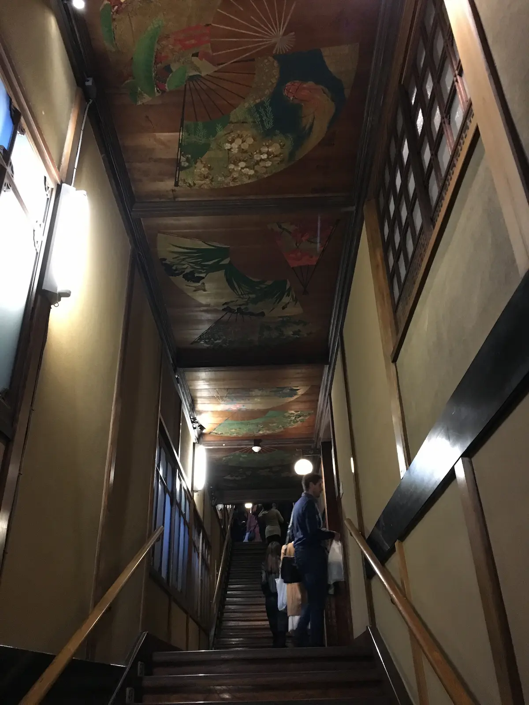
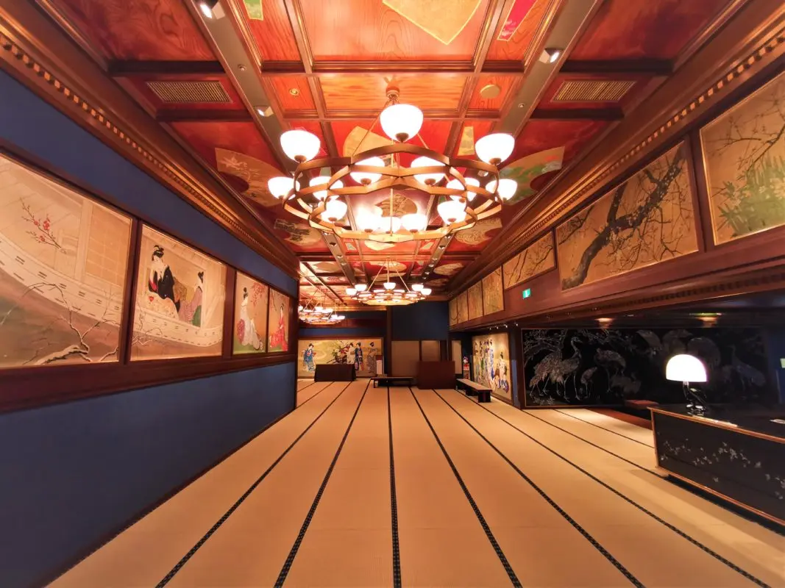
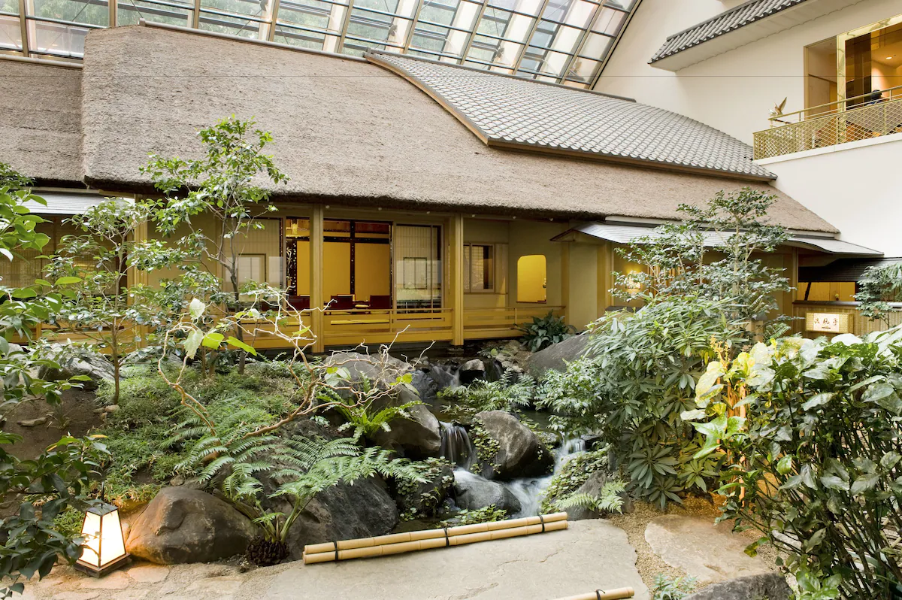
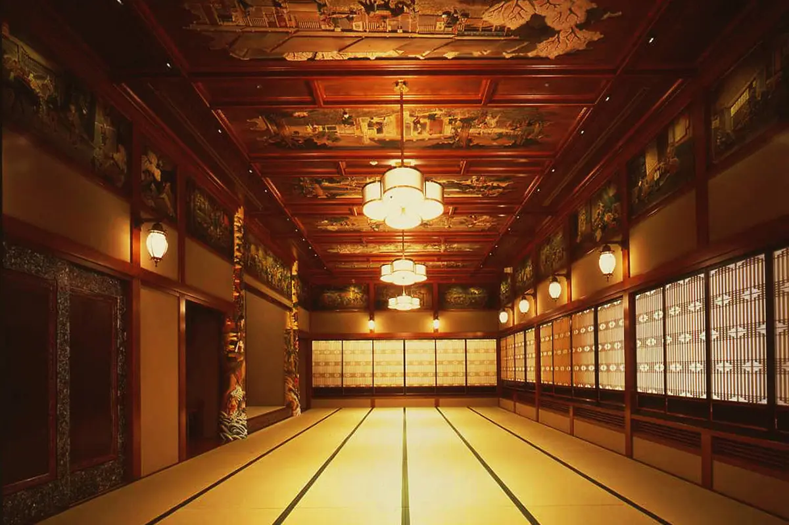
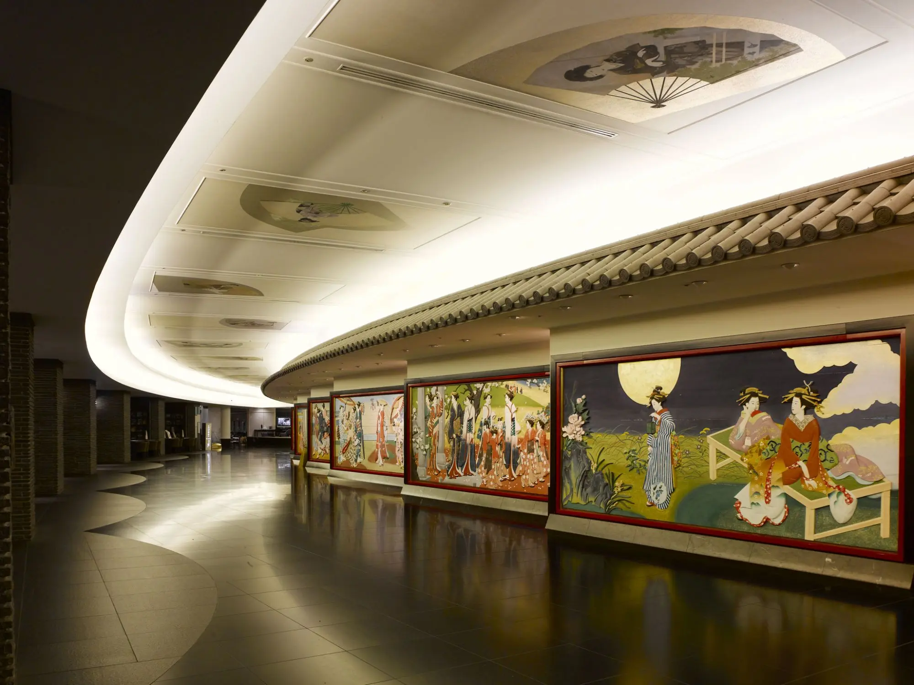
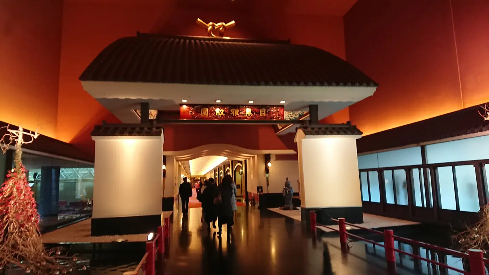
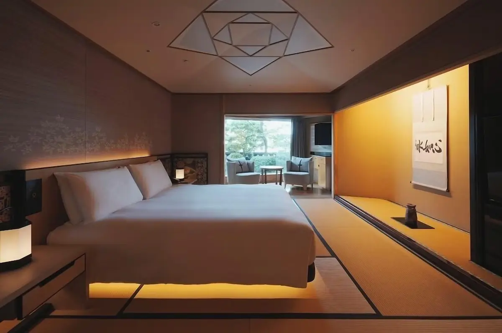
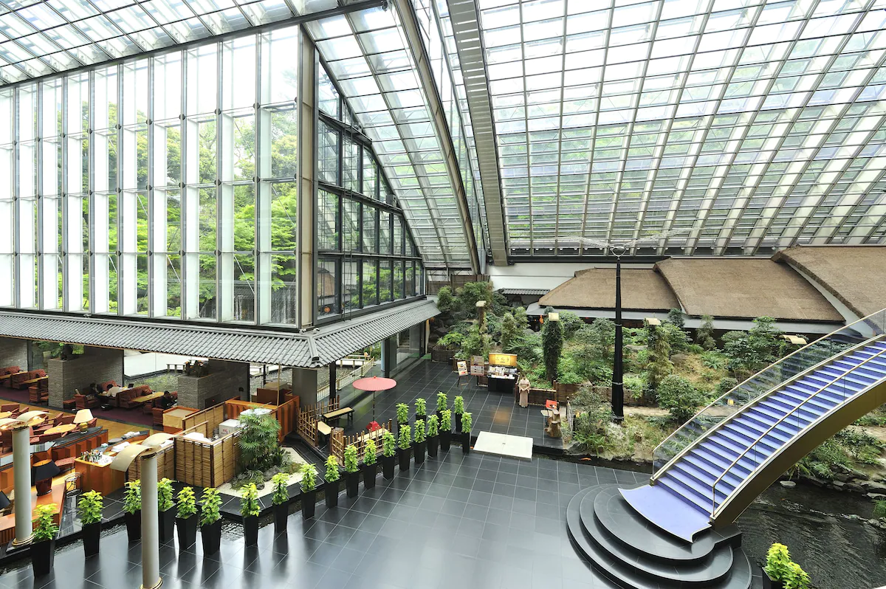

There is a bathroom in Tokyo that requires crossing a bridge to reach the toilet. The bridge spans a small indoor stream, flanked by carved wooden panels and walls inlaid with mother-of-pearl. Directly above, a lacquered ceiling catches the light from paper lanterns. It is, by any objective measure, the most extravagant public restroom in Japan — and it sits inside a hotel that has been called, since 1931, the Palace of the Dragon God.
Hotel Gajoen Tokyo occupies a quietly extraordinary position in the geography of Japanese popular culture. It is widely considered one of the primary architectural inspirations for the interior of Aburaya, the bathhouse at the center of Hayao Miyazaki's Spirited Away. The 99-step Hyakudan Kaidan staircase inside the hotel — a wooden structure built in 1935, connecting seven elaborately decorated banquet rooms, now designated a Tangible Cultural Property of Tokyo — is specifically associated with the scenes of No Face's feast, its ornate corridors and lacquered chambers bearing a resemblance to Aburaya's interior that Ghibli enthusiasts have documented in precise detail. You can stay here. You can eat dinner where the banquets were held. You can walk the 99 steps yourself, during the seasonal exhibitions when the staircase opens to visitors.
The Palace That Outlasted an Earthquake

When Hosokawa Rikizo opened Meguro Gajoen in 1931, Tokyo was still recovering from the catastrophic Great Kanto Earthquake of 1923. The city had been almost entirely destroyed eight years earlier — more than 140,000 people died, and the wooden residential districts that made up most of the capital had burned to the ground. Into this recovering city, Hosokawa built a structure of almost deranged extravagance: a restaurant and banquet complex decorated with approximately 2,500 works of Japanese art, with corridors lacquered in gold leaf, ceilings painted by the most prominent artists of the Taisho and early Showa period, and a bathroom that required crossing a bridge.
The original Gajoen was described at the time as a department store of ornamentation — a Showa-era version of the fairy tale Palace of the Sea God, which brought together in one place all the dreams and decorative fantasies that ordinary people could not afford in their own homes. Hosokawa had begun his business as a high-class Japanese restaurant, then methodically added a shrine, a church, a costume salon, a beauty salon, and a photo studio, creating Japan's first all-in-one wedding and banquet complex. The resulting structure was something that had no architectural precedent in Tokyo and has had none since.
In 1988, much of the original complex had to be demolished to accommodate improvements to the Meguro River flowing alongside the property. What survived was placed under protection: the Hyakudan Kaidan and its seven adjoining rooms were designated a Tangible Cultural Property of Tokyo in 2009. The current hotel — 60 all-suite rooms rebuilt around the surviving historic core — opened as part of Small Luxury Hotels of the World and received a three-pavilion rating in the 2009 and 2010 Michelin Hotel Guide.
The Hyakudan Kaidan: Ninety-Nine Steps Through the Showa Period

The name means One Hundred Steps Staircase. There are 99 steps. The discrepancy is intentional: the Japanese reading of 99 — kyūjūku — can also be parsed as meaning forever, while hyaku-dan (one hundred steps / the end) would have implied completion, finality, a thing concluded. Hosokawa left one step unbuilt so that the Gajoen would always remain a work in progress, always reaching toward the next step.
The staircase connects seven rooms, each decorated in a distinct aesthetic universe by prominent artists of the period. The Gyosho Room features a single carving cut from a 300-year-old tree approximately 60 centimeters in diameter, with pillars depicting the Dialogue of the Fisherman and the Woodcutter — a Chinese theme in which spring and autumn, sea and mountain, sitting and standing are placed in deliberate contrast on opposing sides of the room. The Seisui Room's ceiling is covered with painted fans in multiple colors. One room contains a reproduction of an imperial palace chamber. Another is decorated with mother-of-pearl lacquerwork — raden — on its structural elements, the same technique used throughout the bathroom downstairs. Each room was built to showcase a different medium, a different artist, a different moment in the continuum of Japanese decorative art.
Today the Hyakudan Kaidan opens for seasonal exhibitions — typically four to five times per year — during which tickets are sold for entry to the staircase and rooms. Hotel guests are given priority access during exhibitions. Outside exhibition periods, the rooms are closed to visitors, though the corridors and public spaces of the hotel retain artwork from the original collection throughout.
2,500 Works of Art and the Museum You Sleep In
The 60 guest rooms are all suites of 80 square meters or larger — the smallest room in the hotel is what most Tokyo properties would designate a premium suite. Each is modeled on the tea room aesthetic of traditional Japanese architecture: tatami flooring, warm wooden ceiling beams, shoji screens admitting diffused natural light, and the precise kind of spatial quiet that comes from rooms designed for contemplation rather than efficiency. Every suite is equipped with a private sauna and whirlpool bath. The hotel's largest accommodation spans 240 square meters and contains a dining room that seats fourteen people.
The artwork that fills the public areas of the hotel is not reproduction or decoration in the conventional hotel sense. The original Invitation Gate — the Maneki no Daimon, adorned with a copper ridge-decorated roof — stands at the entrance to the hotel building, unchanged from 1931. The corridors between the lobby and the dining areas are lined with painted screens, carved panels, and lacquerwork that has been in place for nearly a century. A Japanese garden centered on a koi pond, with waterfalls and stone lanterns, fills the central courtyard. The garden's symbolism is precise: koi for good fortune and longevity, stone for permanence, water for purification — the same vocabulary of auspicious materials that structures the decorative program of the entire building.
Dining at the Palace
The hotel operates seven dining venues, covering the full range of Japanese and international cuisine from a single address. Tofutei serves kaiseki — the sequential multi-course format of traditional Japanese fine dining, with each course calibrated to the season and presented in lacquerware that echoes the building's decorative logic. Shunyuki offers a Tokyo interpretation of Chinese cuisine, available in private dining rooms inside historic chambers. Canoviano brings Italian cooking to the property, established by a pioneer of Italian cuisine in Japan. Kanade Terrace operates as an American-style grill with views over the garden courtyard. In the evening, a live piano performance runs in the café lounge.
The breakfast here is notable enough to appear consistently in guest accounts: a dual Japanese and Western format, with made-to-order components, served in a room where the garden is visible through floor-to-ceiling glass. For guests arriving on the anime pilgrimage itinerary, breakfast at Gajoen — in the building that helped shape Aburaya's visual language — is a meal that earns its own paragraph in any itinerary.
Meguro: The Neighborhood That Makes Sense of the Hotel
Meguro Station is a six-minute walk. From there, JR Yamanote Line connects directly to Shibuya (two stops, five minutes), Shinjuku, Harajuku, and the rest of central Tokyo. Haneda Airport is 6.2 miles away — a direct taxi ride or a straightforward train connection. The neighborhood itself is one of Tokyo's most livable: the Meguro River canal, lined with cherry trees, runs nearby. The Tokyo Metropolitan Teien Art Museum — a 1933 Art Deco building that was the residence of Prince Asaka before becoming a public museum — is a 12-minute walk. Nakameguro's gallery and café district is accessible on foot.
The hotel's position in Tokyo is not the most obviously convenient for standard tourist itineraries built around Asakusa, Akihabara, and Shinjuku — but it is a five-minute train ride from Shibuya, which places it within reach of almost everything. And for the specific purpose of the Ghibli pilgrimage, the hotel is the destination rather than the base: staying here is the pilgrimage, in a way that no other Tokyo accommodation can claim.
Practical Information
- Check-in: 3:00 PM Check-out: 12:00 PM
- Rooms: 60 all-suite rooms — all 80 m² or larger; each with private sauna and whirlpool bath
- Hyakudan Kaidan: Open during seasonal exhibitions only (4–5 times per year) — check hotel schedule when booking; hotel guests receive priority access
- Dining: 7 restaurants on site — Tofutei (kaiseki), Shunyuki (Chinese), Canoviano (Italian), Kanade Terrace (American grill), plus café lounge with live piano
- From Haneda Airport: Approx. 30–40 min by taxi or Keikyu Line to Meguro (~6 min walk from station)
- From Narita Airport: Narita Express to Shibuya → Tokyu Meguro Line to Meguro (~1h 30min total)
- Nearest Station: Meguro Station (JR Yamanote Line / Tokyo Metro Namboku Line / Toei Mita Line / Tokyu Meguro Line) — 5–6 min on foot
- Ghibli Museum Mitaka: 30–35 min by train via JR Chūō Line (advance tickets required)
- Language: English spoken; experienced with international guests
- Price range: From approx. $770/night for standard suites; larger suites significantly higher
| Location | Meguro, Tokyo (1-8-1 Shimo-Meguro, Meguro-ku) |
| Category | Museum Hotel / Luxury Boutique (Small Luxury Hotels of the World) |
| Anime Connection | Spirited Away — Hyakudan Kaidan widely believed to have inspired Aburaya's interior; No Face feast scenes |
| Founded | 1931 as Meguro Gajoen; current hotel rebuilt 1988, historic wing preserved |
| Rooms | 60 all-suites — all 80 m² or larger; largest suite 240 m² |
| Art Collection | Approx. 2,500 works of traditional Japanese art throughout property |
| Cultural Property | Hyakudan Kaidan (1935) — Tangible Cultural Property, Tokyo Metropolitan Government (2009) |
| Michelin Rating | Three-pavilion rating, 2009 & 2010 Michelin Hotel Guide |
| Dining | 7 restaurants — kaiseki, Chinese, Italian, American grill, café lounge |
| Price Range | From approx. $770/night (suites); breakfast available separately or on package |
| Nearest Station | Meguro Station — 5–6 min on foot |
Photo Gallery

Photo 1
Photo 2
Photo 3'">
Photo 4'">
Photo 5'">
Photo 6'">Stay Inside the Palace of the Dragon God
Check availability at Hotel Gajoen Tokyo — and time your visit to coincide with a Hyakudan Kaidan exhibition.
Want the full Spirited Away pilgrimage across Japan? Read our complete guide: Through the Tunnel — Every Real-Life Spirited Away Location in Japan →
← Back to Stay